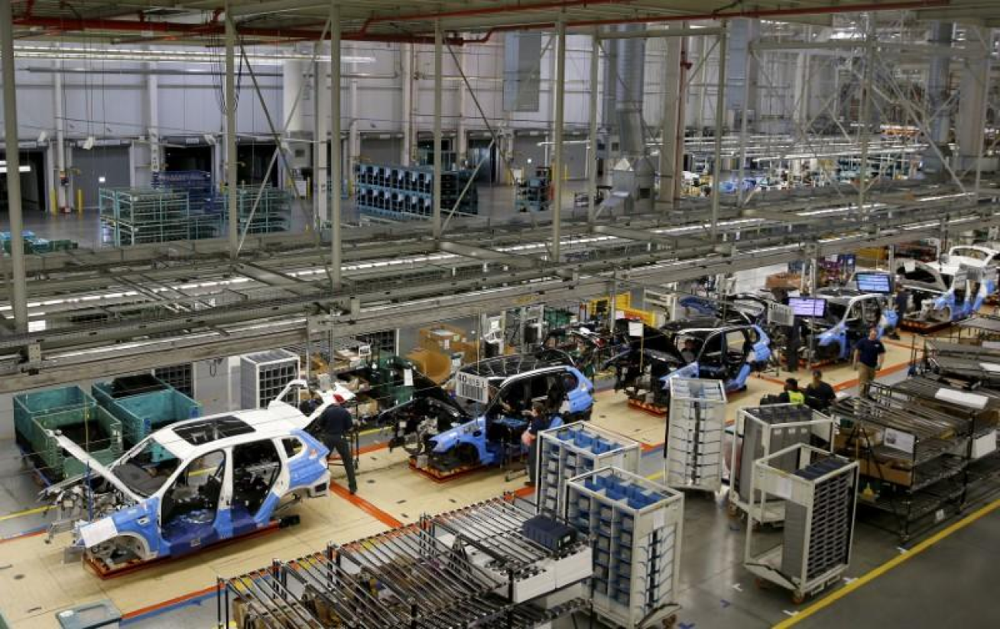
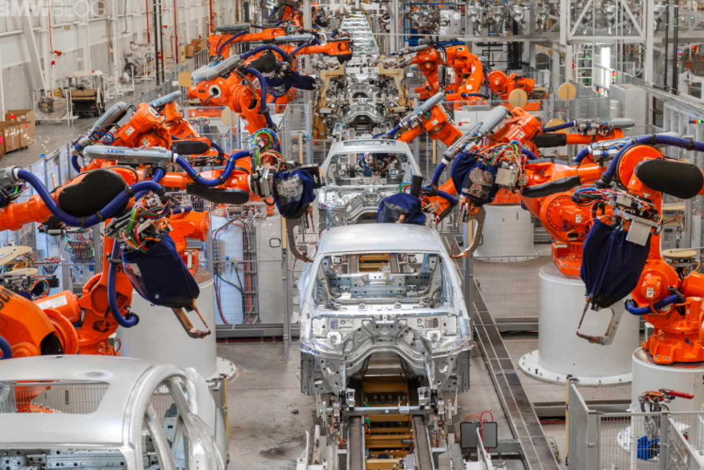

BMW Manufacturing in Greenville, South Caronlina produces the BMW X line. This factory is the largest BMW factory in the world by volume and employs over 15,000 people. Working here made me feel like a small fish in a big pond.
Here, I was a part of the final fit and finish line. My job was to automate the key performance indicator sheet, a diagram of various statistics from the previous shift, which was prepared every day for the morning meeting.
The code I was writing was mostly SQL queries and a bit of visual basic, both for the Oracle suite. The main task here, though, was hunting down database credentials across the ocean of factory offices. I learned how to compose a professional email asking for production database credentials, and when that email innevitably was put asside by it’s recipient, I learned the rest of the arcane arts required to get something done in a coporate environment.
Working in this factory was a far ways away from the under 30 person office I was in the previous month at FltPlan. This internship gave me the oportunity to learn how a fortune 50 company is run, and all systems and structure it takes to do so.
I also took a week long class to learn how to program these robots.